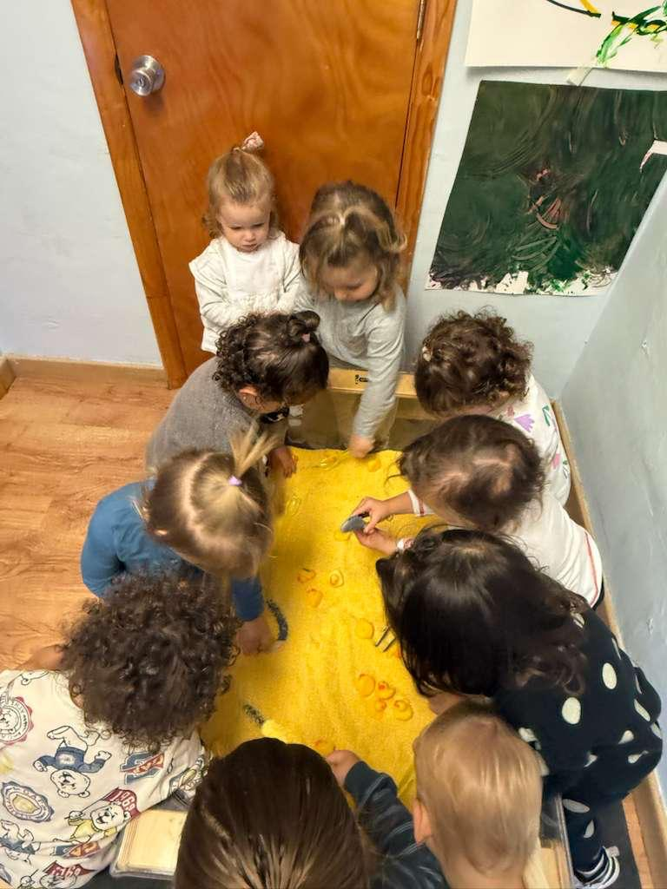

Chess
Strategic thinking, patience, and problem-solving through competitive and recreational chess.
Clubs, athletics, events, and the moments that shape who students become.
We build programs based on what students and families actually want. Here is what is running now.
Strategic thinking, patience, and problem-solving through competitive and recreational chess.
Hands-on engineering, coding, and teamwork through building and programming robots.
Grace, discipline, and creative expression through structured dance instruction.
Teamwork, fitness, and sportsmanship on the field.
Coordination, strategy, and team spirit through organized flag football.
Confidence, awareness, and physical skills that go beyond the classroom.
Plus teacher-led tutoring clinics and new programs added every semester based on parent and student interest.

Every student has PE built into their week. Coach Ariel works with our youngest learners from Daisies through 1st grade, and Coach Geoff leads 2nd through 5th grade.
The Pardes Pirates represent our school with character. Being a Pirate means showing up for your teammates, playing with integrity, and giving your best effort every time.
Throughout the year, Pardes brings families together through celebrations, milestones, and traditions.
Games, food, music, and community spirit celebrating the Festival of Lights.
Costumes, activities, and joy as the whole school celebrates together.
A special day where students welcome their grandparents and VIPs into the classroom to share in their learning.
Students lead a hands-on seder experience, bringing the Passover story to life.
Butterflies (PreK), 5th grade, and 8th grade each celebrate their milestone with a special trip and ceremony.
Dedicated evenings for parents to connect, celebrate, and be part of the Pardes community.




Come see the school in action.
Meet the teachers.
Get a feel for the community.